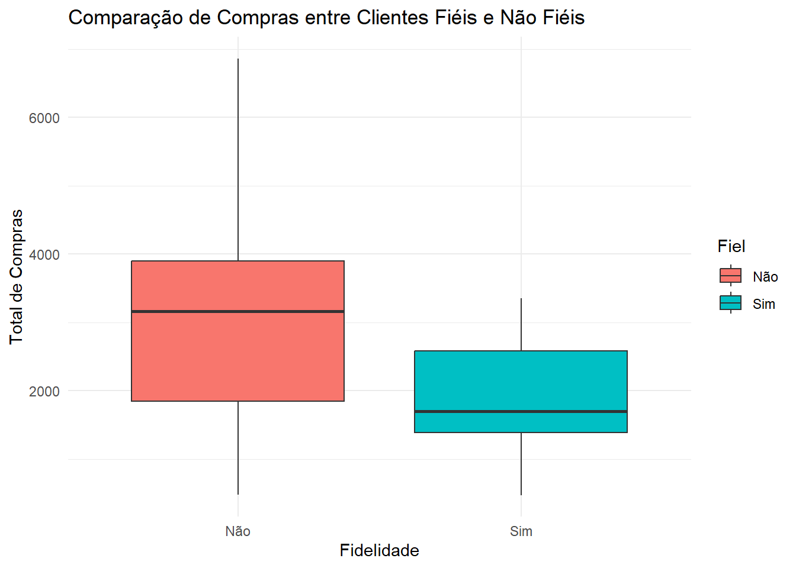

“Projeto fictício de um e-commerce que testará a hipótese de que clientes fiéis compram mais da mesma marca em comparação com clientes não fiéis.”
##1. Instalação de pacotes**
Passo 1: Instalar e Carregar os Pacotes Necessários # Instalar e carregar os pacotes necessários:
install.packages("dplyr")
pacote 'dplyr' desempacotado com sucesso e somas MD5 verificadas
Os pacotes binários baixados estão em
C:\Users\Vivian\AppData\Local\Temp\RtmpoZnF3i\downloaded_packages
install.packages("ggplot2")
pacote 'ggplot2' desempacotado com sucesso e somas MD5 verificadas
Os pacotes binários baixados estão em
C:\Users\Vivian\AppData\Local\Temp\RtmpoZnF3i\downloaded_packages
install.packages("tidyr")
pacote 'tidyr' desempacotado com sucesso e somas MD5 verificadas
Os pacotes binários baixados estão em
C:\Users\Vivian\AppData\Local\Temp\RtmpoZnF3i\downloaded_packages
library(dplyr)
Anexando pacote: 'dplyr'
Os seguintes objetos são mascarados por 'package:stats':
filter, lag
Os seguintes objetos são mascarados por 'package:base':
intersect, setdiff, setequal, union
library(ggplot2)library(tidyr)
##2. Geração dos Dados Fictícios**
Agora, vamos gerar um conjunto de dados fictício com 100 clientes, 5 marcas e 500 compras. Cada compra será registrada com o cliente que a fez, a marca comprada e o valor da compra.
#2.4 Gerar dados de compras com cliente, marca e valor da compra**
data <-data.frame(Cliente =sample(clientes, n_purchases, replace =TRUE), # Cliente que fez a compraMarca =sample(marcas, n_purchases, replace =TRUE), # Marca compradaValorCompra =runif(n_purchases, min =100, max =1000) # Valor da compra (entre 100 e 1000))
#2.5 Exibir as primeiras linhas dos dados para verificar**
head(data)
Cliente Marca ValorCompra
1 Cliente 31 Marca 3 456.3384
2 Cliente 79 Marca 3 515.3391
3 Cliente 51 Marca 2 752.7694
4 Cliente 14 Marca 5 523.0024
5 Cliente 67 Marca 1 999.5716
6 Cliente 42 Marca 4 861.3422
##3. Identificação de Clientes Fiéis****
Agora vamos identificar quais clientes são “fiéis” a uma loja, ou seja, aqueles que compram frequentemente a mesma marca:
#3.1 Calcular o número de compras por cliente e por marca
compras_por_cliente_marca <- data %>%group_by(Cliente, Marca) %>%summarise(NumCompras =n(), .groups ='drop')
#3.2 Calcular a proporção de compras por marca para cada cliente**
#3.4 Adicionar ao conjunto de dados a informação se o cliente é “fiel” ou não**
data <- data %>%left_join(fidelidade_cliente, by ="Cliente") %>%mutate(Fiel =ifelse(ProporcaoFrequente >0.5, "Sim", "Não"))
#3.5 Exibir as primeiras linhas do novo conjunto de dados
head(data)
Cliente Marca ValorCompra MarcaFrequente ProporcaoFrequente Fiel
1 Cliente 31 Marca 3 456.3384 Marca 1 0.5000000 Não
2 Cliente 79 Marca 3 515.3391 Marca 3 0.4285714 Não
3 Cliente 51 Marca 2 752.7694 Marca 1 0.3333333 Não
4 Cliente 14 Marca 5 523.0024 Marca 3 0.4000000 Não
5 Cliente 67 Marca 1 999.5716 Marca 1 0.3750000 Não
6 Cliente 42 Marca 4 861.3422 Marca 5 0.3333333 Não
##4. Teste de Hipótese**
Vamos testar a hipótese de que clientes fiéis compram mais da mesma marca do que os clientes não fiéis. Para isso, realizaremos um teste t:
#4.1 Calcular o total de compras por cliente
compras_totais <- data %>%group_by(Cliente, Fiel) %>%summarise(TotalCompras =sum(ValorCompra), .groups ='drop')
#4.2 Realizar o teste t para comparar as médias**
teste_t <-t.test(TotalCompras ~ Fiel, data = compras_totais)
#4.3 Exibir os resultados do teste t**
print(teste_t)
Welch Two Sample t-test
data: TotalCompras by Fiel
t = 4.3147, df = 46.551, p-value = 8.259e-05
alternative hypothesis: true difference in means between group Não and group Sim is not equal to 0
95 percent confidence interval:
569.5768 1565.1478
sample estimates:
mean in group Não mean in group Sim
3029.459 1962.097
print(teste_t)
##5. Visualização dos Resultados
Finalmente, vamos visualizar os resultados com um boxplot, comparando o total de compras entre clientes fiéis e não fiéis:
#5.1 Criar um boxplot para visualizar as compras de clientes fiéis e não fiéis**
# Criar um boxplot para visualizar as compras de clientes fiéis e não fiéisggplot(compras_totais, aes(x = Fiel, y = TotalCompras, fill = Fiel)) +geom_boxplot() +labs(title ="Comparação de Compras entre Clientes Fiéis e Não Fiéis",x ="Fidelidade", y ="Total de Compras") +theme_minimal()

#6. Resultado do Teste t**
Para determinar se clientes fiéis compram mais da mesma marca em comparação com clientes não fiéis, analisamos os resultados do teste t que compara o total de compras entre esses dois grupos. Aqui está um passo a passo de como você pode interpretar os resultados:
Depois de executar o código para o teste t, você obterá uma saída semelhante a esta:
teste_t <-t.test(TotalCompras ~ Fiel, data = compras_totais)print(teste_t)
Welch Two Sample t-test
data: TotalCompras by Fiel
t = 4.3147, df = 46.551, p-value = 8.259e-05
alternative hypothesis: true difference in means between group Não and group Sim is not equal to 0
95 percent confidence interval:
569.5768 1565.1478
sample estimates:
mean in group Não mean in group Sim
3029.459 1962.097
O teste t irá fornecer:
t-value (valor t): Indica a diferença entre as médias em termos do número de desvios padrão.
p-value (valor p): Indica a significância estatística. Um valor p menor que 0,05 geralmente indica que a diferença entre as médias é estatisticamente significativa.
Confiança Intervalo (Intervalo de Confiança): Mostra a gama de valores que contêm a diferença média real com uma certa confiança (geralmente 95%).
Médias das compras totais: A média do total de compras para clientes fiéis e não fiéis.
##7.Interpretação dos Resultados**
Se o p-value for menor que 0,05: Isso sugere que há uma diferença estatisticamente significativa entre os clientes fiéis e não fiéis no total de compras. Dependendo do sinal da diferença de médias, podemos concluir se os clientes fiéis compram mais ou menos da mesma marca do que os não fiéis.
Se o p-value for maior que 0,05: Isso sugere que não há uma diferença estatisticamente significativa entre os clientes fiéis e não fiéis no total de compras. Ou seja, não podemos afirmar com confiança que os clientes fiéis compram mais (ou menos) da mesma marca em comparação com os clientes não fiéis.
O resultado que você obteve a partir do teste t pode ser interpretado da seguinte maneira:
#7.1 Resumo dos Resultados:**
** t-value (valor t): 4.3147 degrees of freedom (df): 46.551 p-value: 8.259e-05 (ou 0.00008259) 95% confidence interval (intervalo de confiança de 95%): Entre 569.5768 e 1565.1478 mean in group Não: 3029.459 mean in group Sim: 1962.097 Interpretação: p-value:
O p-value é muito pequeno (8.259e-05), o que significa que a diferença nas médias do total de compras entre clientes fiéis e não fiéis é estatisticamente significativa. Como esse valor é menor que 0,05 (o nível de significância comum), rejeitamos a hipótese nula de que não há diferença entre as médias dos dois grupos. Ou seja, há evidências suficientes para afirmar que existe uma diferença significativa no comportamento de compra entre clientes fiéis e não fiéis. Médias dos Grupos:
A média do total de compras para clientes não fiéis (grupo Não) é 3029.459. A média do total de compras para clientes fiéis (grupo Sim) é 1962.097. Isso indica que, em média, clientes não fiéis gastam mais (em termos de compras totais) do que clientes fiéis. Intervalo de Confiança:
O intervalo de confiança de 95% para a diferença entre as médias dos grupos é de 569.5768 a 1565.1478. Como esse intervalo não inclui o zero, isso reforça a conclusão de que a diferença entre os grupos é estatisticamente significativa.
##8. Conclusão:
Com base nos resultados, podemos concluir que, ao contrário da hipótese original, clientes não fiéis compram mais da mesma marca em comparação com clientes fiéis. Essa diferença é estatisticamente significativa, o que significa que não é provável que essa diferença seja devido ao acaso.
Resultado apresentado no grafico de Boxplot :
# Criar um boxplot para visualizar as compras de clientes fiéis e não fiéisggplot(compras_totais, aes(x = Fiel, y = TotalCompras, fill = Fiel)) +geom_boxplot() +labs(title ="Comparação de Compras entre Clientes Fiéis e Não Fiéis",x ="Fidelidade", y ="Total de Compras") +theme_minimal()
Os resultados do teste indicam que clientes fiéis não compram mais da mesma marca em comparação com clientes não fiéis. Na verdade, a média do total de compras é maior para os clientes não fiéis (3029.459) do que para os clientes fiéis (1962.097).
Isso sugere que, em média, clientes não fiéis gastam mais na compra da mesma marca do que os clientes que são considerados fiéis. A diferença observada é estatisticamente significativa, o que significa que podemos confiar nesta conclusão com um alto grau de certeza.